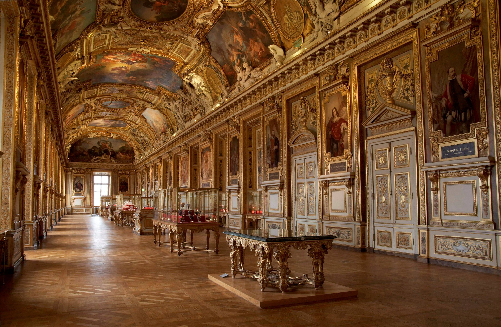
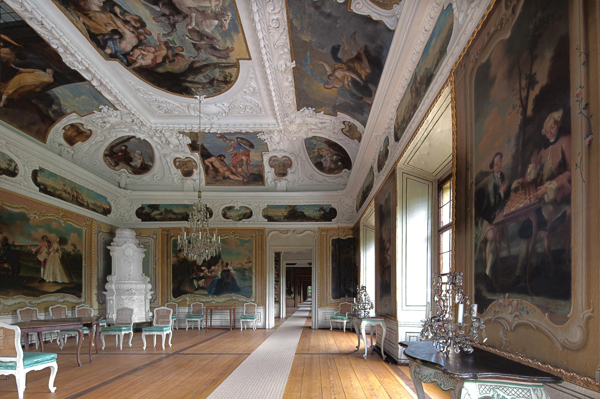
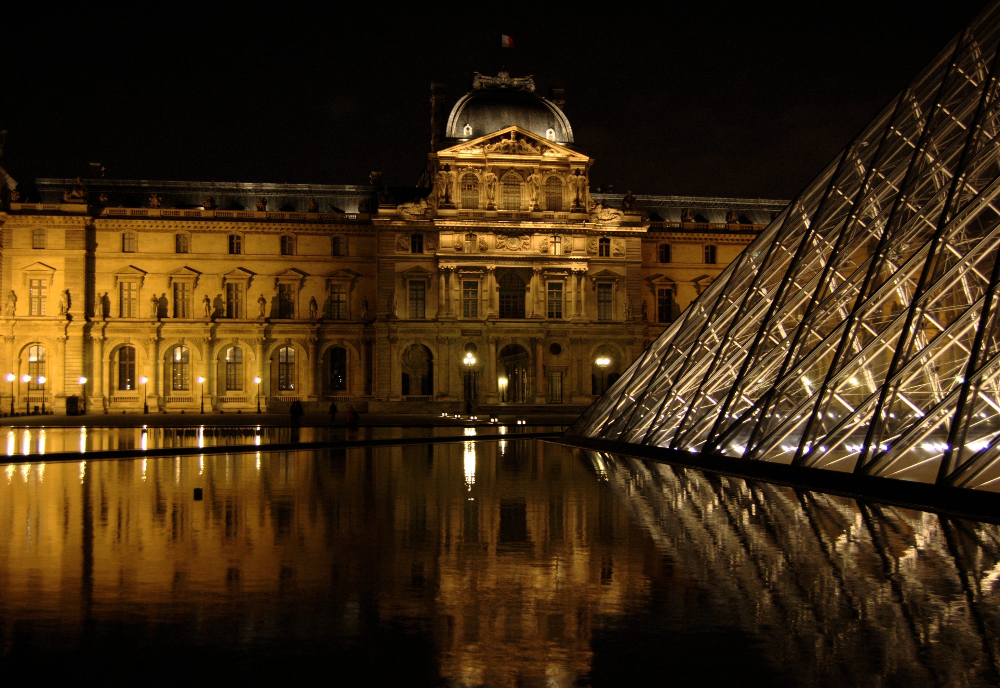
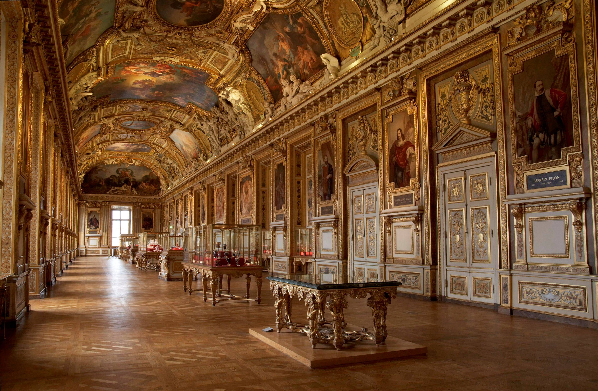
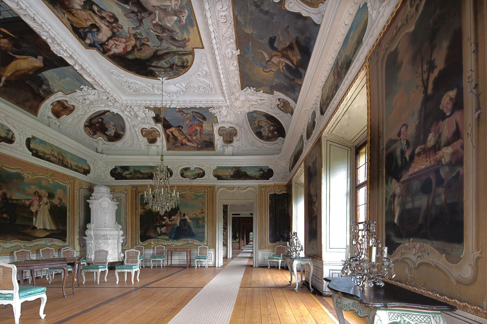
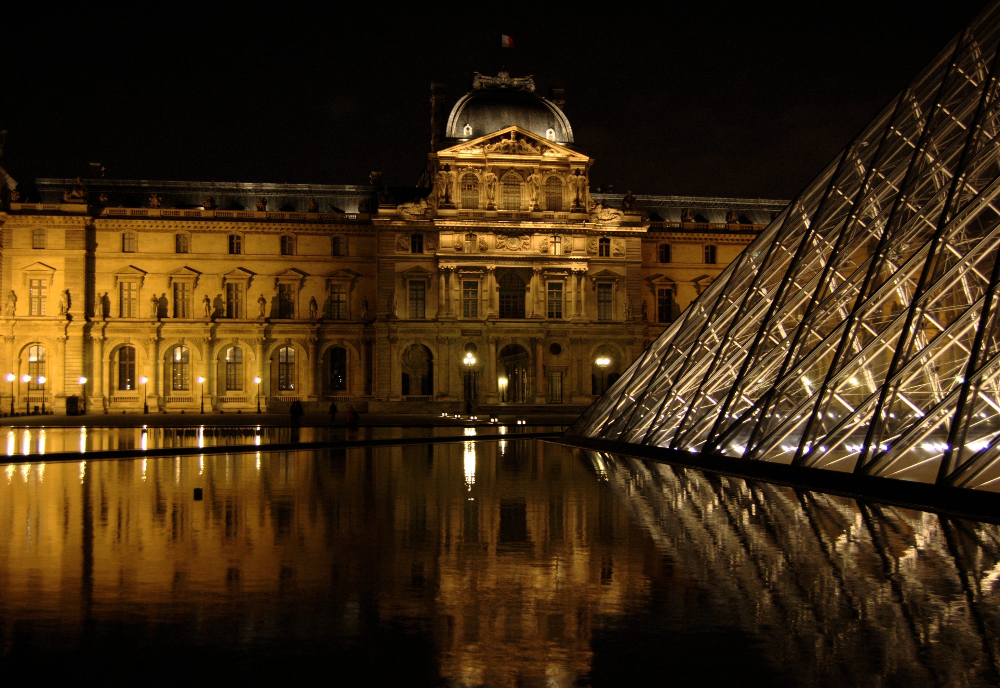

IL LOUVRE
Il Museo del Louvre (in francese Musée du Louvre, [myze dy luvʁ]) a Parigi, in Francia, è uno dei più celebri musei del mondo
e il primo per numero di visitatori: 8,8 milioni l'anno.
Si trova sulla rive droite, nel I arrondissement, tra la Senna e Rue de Rivoli.
Il museo ha preso il nome dal palazzo che lo ospita. Originariamente era una fortezza, costruita alla fine del XII secolo durante
il regno del re capetingio Filippo II,[4] nei rifacimenti successivi fu sede reale e governativa.
La conformazione attuale del palazzo origina dai lavori ordinati da Carlo V nella seconda metà del XIV secolo.
Fu la sede effettiva della monarchia francese fino al 1682, quando Luigi XIV si trasferì nella Reggia di Versailles, e rimase
comunque la sua sede formale fino al termine dell'Ancien Régime nel 1789. Fu il governo rivoluzionario a dare piena attuazione
a progetti già avviati di trasformazione in museo, inaugurandolo come tale nel 1793, anche se il palazzo continuò ad ospitare enti
governativi fino agli anni novanta.
Per iniziativa del presidente Mitterand fu sottoposto a lavori di rifacimento e ampliamento negli anni ottanta e novanta secondo
il progetto denominato Grand Louvre, che comprende la caratteristica piramide di vetro e acciaio nel cortile principale.
Il ruolo centrale della Francia nella storia dell'ottocento contribuì grandemente all'accrescimento delle collezione museale,
che comprende alcune delle più famose opere d'arte del mondo e manufatti di grande valore storico, come la stele degli avvoltoi
e quella di Hammurabi.
Vi sono esposte la Gioconda e la Vergine delle Rocce di Leonardo da Vinci, i due Prigioni di Michelangelo Buonarroti,
Amore e Psiche di Antonio Canova, Il giuramento degli Orazi di Jacques-Louis David, La zattera della Medusa di Théodore Géricault,
La Libertà che guida il popolo di Eugène Delacroix, la Venere di Milo e la Nike di Samotracia.
La statua equestre di Luigi XIV rappresenta il punto di origine del cosiddetto Axe historique, anche se il palazzo non è allineato
con l'asse stesso.
La collezione del Museo del Louvre comprende oltre 380.000 oggetti e opere d'arte e, anche se non è una delle più grandi,
è sicuramente una delle più importanti.
Sono in esposizione permanente 35.000 opere, scelte dai curatori delle sue otto sezioni, ed esibite nei 60.600 m² a loro dedicati.
Secondo il Resoconto Annuale del 2005[21] i pezzi di proprietà del museo si dividono come segue:
Il vanto del museo è la sua raccolta di 11.900 dipinti (6.000 in esposizione permanente e i rimanenti conservati in deposito),
che rappresenta la seconda più grande collezione di arte pittorica del mondo dopo quella del Museo dell'Ermitage di San Pietroburgo
in Russia.
La sezione stampe e disegni è stata notevolmente ampliata nel 1935, grazie alla donazione della collezione del barone
Edmond James de Rothschild (1845 – 1934) che comprendeva più di 40.000 incisioni, quasi 3.000 disegni e 500 libri miniati.
Il museo del Louvre dispone di un grande gruppo di mecenati, constituito da associazioni e aziende. La Societa d'Amici
del museo ha comprato più di 700 opere[24] per arricchirlo e aiutarlo finanziariamente.